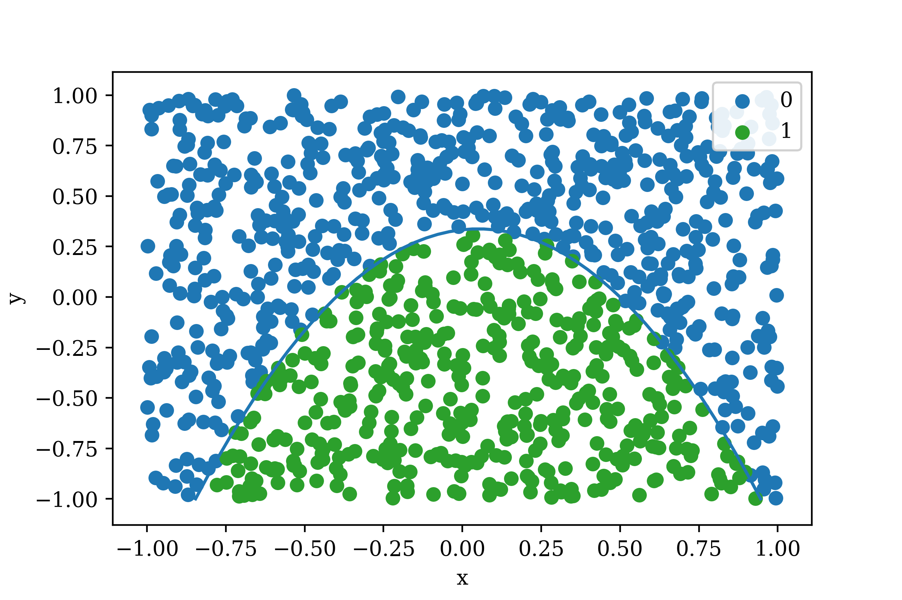

Binary Classification with Artificial Neural Networks using Python and TensorFlow
Sat, 09 Dec 2017
Classification, Computer Science, Data Science, Data Visualization, Machine Learning, Python, Tensorflow
This post is an introduction to using the
TFANN module for classification problems. The TFANN module is
available here on GitHub. The name TFANN is an abbreviation for
TensorFlow Artificial Neural Network.
TensorFlow is an open-source library for data flow programming. Due to the nature of computational graphs, using TensorFlow can be challenging at times. The TFANN module provides several classes that allow for interaction with the TensorFlow API using familiar object-oriented programming paradigms.
The Setup
First, the required modules are installed and imported. This code requires
numpy,
tensorflow, and
TFANN.
import numpy as np
from TFANN import ANNC
TFANN can be installed via
pip or by copying the source code into a file named
TFANN.py.
pip install TFANN
Next, an \((n, 2)\) matrix of random data points \(\textbf{A}\) is generated using
numpy. Class labels are created following a polynomial inequality. The polynomial used is
\(F(x, y) = -x^{2}+0.1x-0.6y+0.20\).
The inequality used to generate class labels is
\(F(x, y) > 0\).
The equation \(F(x,y)=0\) is a downwards facing parabola centered on the y axis. Points below the parabola satisfy the inequality and are labeled as 1. Points above the curve are labeled as 0. Code to generate the data matrix and class labels follows.
def F(x, y):
return - np.square(x) + .1 * x - .6 * y + .2
#Training data
A1 = np.random.uniform(-1.0, 1.0, size = (1024, 2))
Y1 = (F(A1[:, 0], A1[:, 1]) > 0).astype(np.int)
#Testing data
A2 = np.random.uniform(-1.0, 1.0, size = (1024, 2))
Y2 = (F(A2[:, 0], A2[:, 1]) > 0).astype(np.int)
The function curve is shown in Figure 1 along with a scatter plot of the generated data matrix.
Figure 1: The Generated Data
The color indicates the value of \(F(x,y)\) and the curve is \(F(x,y)=0\). The same plot colored instead with class labels in shown in Figure 2.

Figure 2: Generated Data with Class Labels
As can be seen above, the data is divided into two classes:
0 and
1. The goal is to create a model which can determine if a data point belongs to class
0 or to class
1. This is known as
binary classification as there are two class labels.
Multi-Layer Perceptron Classification
Next, a multi-layer perceptron (MLP) network is fit to the data generated earlier. In this example, the function used to generate class labels is known. This is typically not the case. Instead, the model iteratively updates its parameters so as to reduce the value of a
loss function.
A two layer MLP is constructed. The activation function
tanh is used after the first hidden layer and the output layer uses linear activation (no activation function). The architecture of the network is illustrated in Figure 3.
Figure 3: MLP Network Architecture
The green dots on the neurons in the hidden layer indicate
tanh activation. Next, this network architecture is specified in a format that TFANN accepts and an ANN classifier is constructed.
NA = [('F', 4), ('AF', 'tanh'), ('F', 2)]
The list of tuples is the network architecture.
F indicates a fully-connected layer and the following number indicates the number of neurons in the layer.
AF indicates an activation function and the following string indicates the name of the function. As can be seen, the network architecture specifies a fully-connected layer with 4 neurons which is followed by
tanh which is followed by another fully-connected layer with 2 neurons. The final layer is the output layer.
The docstring for the
_CreateANN function provides detailed information on the types of network operations that are currently supported by
TFANN.
In [109]: help(TFANN._CreateANN)
Help on function _CreateANN in module TFANN:
_CreateANN(PM, NA, X)
Sets up the graph for a convolutional neural network from
a list of operation specifications like:
[('C', [5, 5, 3, 64], [1, 1, 1, 1]), ('AF', 'tanh'),
('P', [1, 3, 3, 1], [1, 2, 2, 1]), ('F', 10)]
Operation Types:
AF: ('AF', <name>) Activation Function 'relu', 'tanh', etc
C: ('C', [Filter Shape], [Stride]) 2d Convolution
CT: 2d Convolution Transpose
C1d: ('C1d', [Filter Shape], Stride) 1d Convolution
C3d: ('C3d', [Filter Shape], [Stride]) 3d Convolution
D: ('D', Probability) Dropout Layer
F: ('F', Output Neurons) Fully-connected
LRN: ('LRN')
M: ('M', Dims) Average over Dims
P: ('P', [Filter Shape], [Stride]) Max Pool
P1d: ('P1d', [Filter Shape], Stride) 1d Max Pooling
R: ('R', shape) Reshape
S: ('S', Dims) Sum over Dims
[Filter Shape]: (Height, Width, In Channels, Out Channels)
[Stride]: (Batch, Height, Width, Channel)
Stride: 1-D Stride (single value)
PM: The padding method
NA: The network architecture
X: Input tensor
The final layer of a classification network requires that class labels be encoded as 1-hot vectors along the final axis of the output. Since the network predicts a single binary class label for each sample, the final layer should have 2 neurons. In this way, the final layer outputs a matrix of dimension \((n, 2)\). The function
argmax is applied along the final dimension of the output matrix to obtain the index of the class label.
Next the network architecture is passed to the constructor of the
ANNC class, along with the input shape and other parameters. ANNC is an abbreviation for
Artificial Neural Network for Classification.
annc = ANNC(A1.shape[1:], NA, batchSize = 1024,
maxIter = 4096, learnRate = 1e-3, verbose = True)
The first arguments to the
ANNC constructor is the shape of a single input sample. In this case, the shape is a vector of length
2. The
batchSize argument indicates the number of samples to use at a time when training the network. The batch indices are selected randomly for each training iteration. The
learnRate parameter specifies the learning rate used by the training method (which is the
adam method by default). The
maxIter argument limits the number of training iterations to some fixed amount. Finally,
verbose controls whether the loss is displayed after each iteration of training. Detailed descriptions for the constructor arguments are available using
help(ANNC).
TFANN follows the
fit,
predict,
score interface used by
scikit-learn. Thus, fitting and scoring the network can be accomplished as follows.
annc.fit(A1, Y1) #Fit using training data only
s1 = annc.score(A1, Y1) #Performance on training data
s2 = annc.score(A2, Y2) #Testing data
print('Train: {:04f}\tTest: {:04f}'.format(s1, s2))
YH = annc.predict(A2) #Predicted labels
The
score method uses
accuracy as the metric for classification models. This is the number of samples labeled correctly divided by the number of samples. Some care should be used with this metric in problems where class labels are imbalanced.
Results
Due to the simple nature of the problem, the network is able to achieve very high accuracy on the cross-validation data. After
4096 iterations, the network achieves roughly
98% accuracy. The predictions on the testing data are plotted below in Figure 4.
Figure 4: Model Cross-Validation Predictions (Accuracy = 98.4%)
The reader is encouraged to modify the data, network architecture, and parameters to explore the features provided by
TFANN.